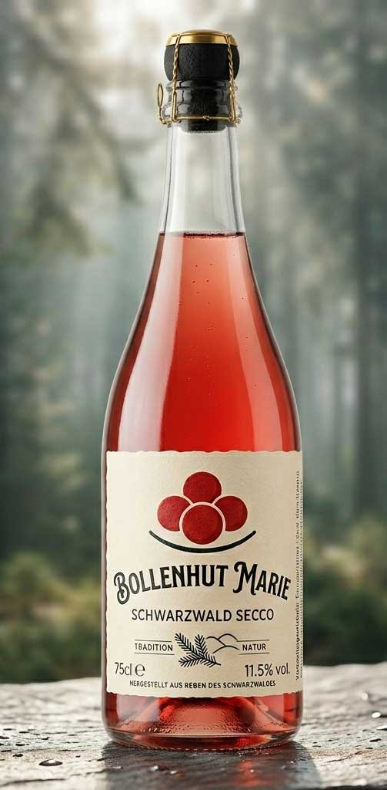

Bollenhut Marie – Schwarzwald im Glas
Ein Schluck Heimat, der kitzelt.Wenn der Morgentau noch über den Tannen hängen bleibt und die ersten Sonnenstrahlen die steilen Rebhänge des Schwarzwalds küssen, entsteht die Seele unserer „Bollenhut Marie“. Dieser Secco ist eine Hommage an die Lebensfreude und die unverwechselbare Tradition unserer Region.
Das Erlebnis
Die Bollenhut Marie präsentiert sich im Glas mit einer lebendigen, feinperligen Perlage und einem leuchtenden Farbspiel, das an reife Waldbeeren erinnert. In der Nase entfaltet sich ein betörendes Bukett von wilden Himbeeren, Kirschblüten und einem Hauch frischer Kräuter.
Die Verkostung
Am Gaumen zeigt sie sich herrlich spritzig und animierend. Die feine Fruchtsüße tanzt in perfekter Balance mit einer eleganten Säure – so leicht und unbeschwert wie ein Sommerfest im Schwarzwald.
„Ob beim Picknick auf der Bergwiese, als eleganter Aperitif oder einfach, um auf das Leben anzustoßen – die Marie ist immer die beste Begleitung.“
Serviervorschlag: Am besten gut gekühlt bei 6–8°C genießen. Ideal zu leichten Vorspeisen, frischen Salaten oder einfach pur als prickelnde Auszeit.
- Herkunft: Ausgewählte Reben des Schwarzwalds
- Inhalt: 0,75l
- Alkohol: 11,5% vol.
- Enthält Sulfite